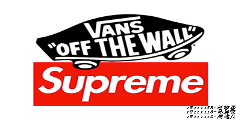
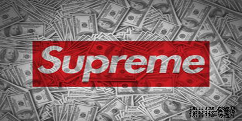
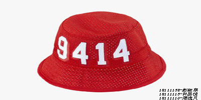
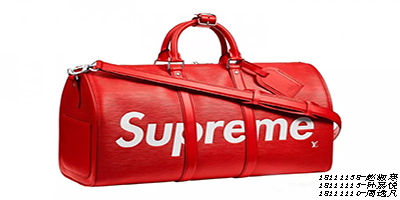
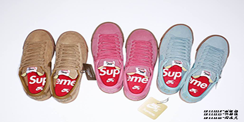

HOME
SUPREME
STUSSY
RIPNDIP
supreme
supreme是一个美国服饰品牌。《Supreme》于1994年秋季诞生于美国纽约曼哈顿，由James Jebbia创办。是结合滑板、Hip-hop等文化并以滑板为主的美国街头服饰品牌，supreme的本意是最高、至上的。



中文名 至高无上的 外文名 Supreme 创立时间 1994年 创立地点 美国纽约曼哈顿 创办人 James Jebbia

